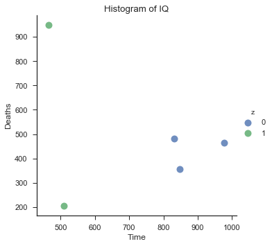

Learning machine learning? Try my machine learning flashcards or Machine Learning with Python Cookbook.
Creating Scatterplots With Seaborn
Preliminaries
import pandas as pd
%matplotlib inline
import random
import matplotlib.pyplot as plt
import seaborn as snsCreate data
# Create empty dataframe
df = pd.DataFrame()
# Add columns
df['x'] = random.sample(range(1, 1000), 5)
df['y'] = random.sample(range(1, 1000), 5)
df['z'] = [1,0,0,1,0]
df['k'] = ['male','male','male','female','female']# View first few rows of data
df.head()| x | y | z | k | |
|---|---|---|---|---|
| 0 | 466 | 948 | 1 | male |
| 1 | 832 | 481 | 0 | male |
| 2 | 978 | 465 | 0 | male |
| 3 | 510 | 206 | 1 | female |
| 4 | 848 | 357 | 0 | female |
Scatterplot
# Set style of scatterplot
sns.set_context("notebook", font_scale=1.1)
sns.set_style("ticks")
# Create scatterplot of dataframe
sns.lmplot('x', # Horizontal axis
'y', # Vertical axis
data=df, # Data source
fit_reg=False, # Don't fix a regression line
hue="z", # Set color
scatter_kws={"marker": "D", # Set marker style
"s": 100}) # S marker size
# Set title
plt.title('Histogram of IQ')
# Set x-axis label
plt.xlabel('Time')
# Set y-axis label
plt.ylabel('Deaths')<matplotlib.text.Text at 0x112b7bb70>
